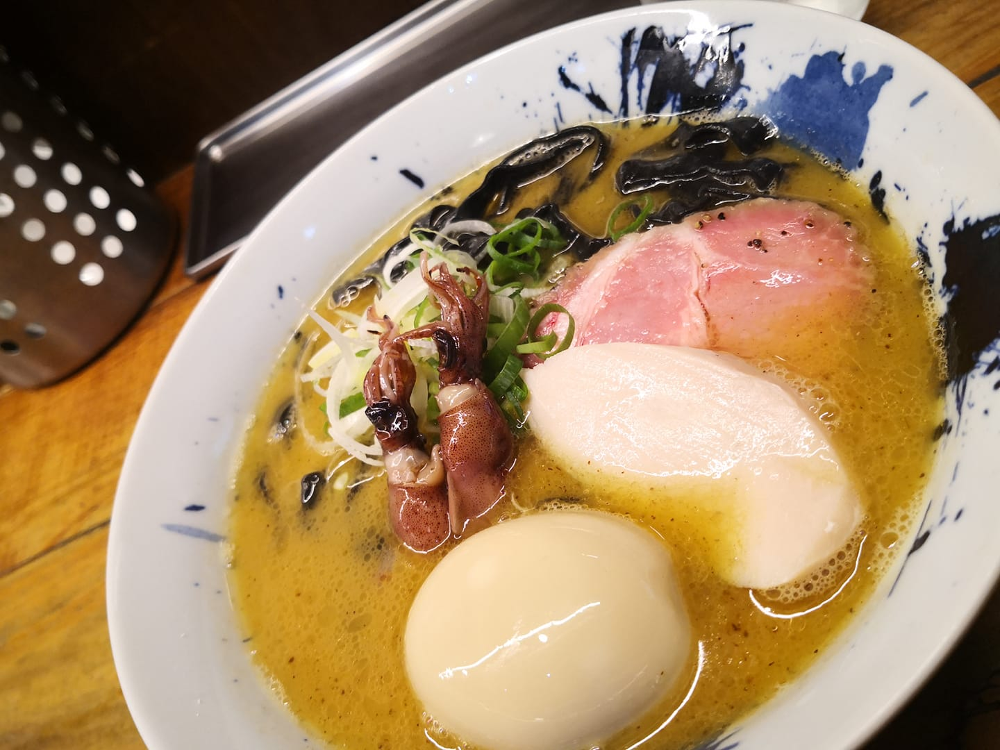

Top 70 of Best Ramen Restaurant in Taiwan from Taiwan Ramen Club.
Limited edition in 2021 April, uaually provided 50 servings each weekend. Very popular and spoke highly in Taiwan Ramen Club. Both broth and firefly squid taste thick & rich but not fishy. Although you have to arrive the restaurant at least half an hour before opening, it is still worth waiting for.
